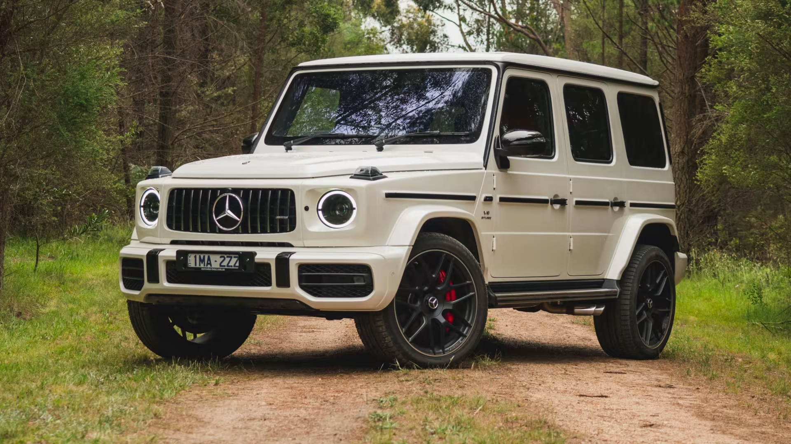
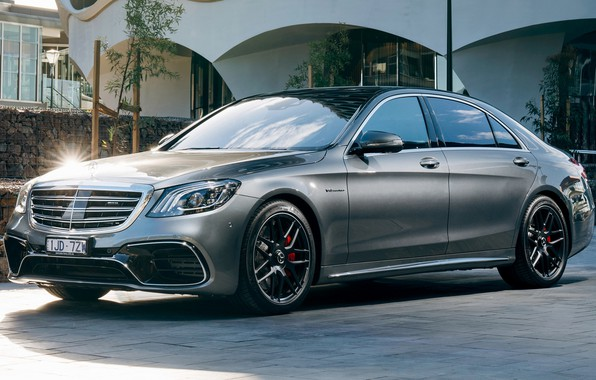
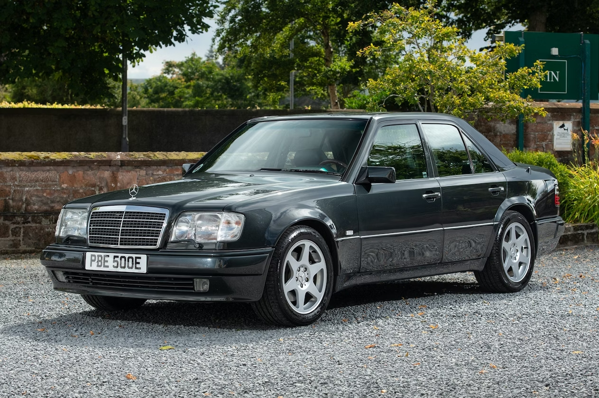

The 2016 Mercedes-Benz G63 AMG is equipped with a 5.5-liter 8-cylinder TURBO MPFI engine.
The engine is paired with a seven-speed automatic transmission. The power unit runs only on premium gasoline and consumes approximately 13.8 l/100 km. Despite the rather large mass and dimensions of the car, acceleration to hundreds takes 5.4 seconds.
For better fuel economy, the engine is equipped with a "start-stop" system. The SUV is equipped with all-wheel drive.
In 2016, information appeared according to which the Mercedes-Benz company began the development of a new generation SUV, which, while preserving the well-known external styling,
will receive an extended body, redesigned chassis, changed interior and modern technologies. In January, at the auto show in Detroit, the public was presented with the new G-class,
which externally retained its signature appearance. Company representatives define the model not as new, but as a deep restyling.
Buyers should receive the first cars in the summer of 2018, while only the gasoline version of the G500 has been announced for release. «Price G63 starts at around $180,000 end maximal price $250,000»


Mercedes-Benz W222 is a model of a large (full-size) luxury car of the premium car brand Mercedes; the sixth generation of the S-class, which replaced the Mercedes-Benz W221.
The official presentation took place on May 15, 2013 in Hamburg, current production since June 12, sales on the car market since July 20, 2013.
The new S560 4Matic model went on sale in 2017 with a biturbo V8 engine, the power of which is 469 hp, and the torque — 700 Nm.
The powerful modification of the Mercedes-AMG S63 was equipped with a 4.0-liter biturbo V8 engine known from other cars of the company, the output of which after adjustment was 612 hp.
and 900 Nm. It works in a pair with a nine-speed proprietary 9G-Tronic SpeedShift MCT transmission.
Thanks to these updates, the S63 AMG can accelerate from 0 to 100 km/h in just 3.5 seconds. «Used S63 W222 prices start at $40,000 and top out at $70,000»
Mercedes-Benz W124 is a series of business-class passenger cars of the German Mercedes-Benz brand, which was produced in 1984-1996.
It was first introduced in 1984 and was intended to replace the W123 series models.
The 500 E model was released in 1990, equipped with a V-shaped "eight" M119 with four valves per cylinder, a working volume of 5.0 liters and a power of 326 liters.
with. Equipped with a 4-speed automatic transmission, the model developed a speed of 250 km/h and accelerated to 100 km/h in 6.1 seconds.
The new model was based on the engine from the R129 generation 500SL model and was significantly modified.
To prevent wheel spin, the ASR system was installed as standard, the rear suspension received hydropneumatic level adjustment,
the catalyst was increased almost twice, and the KE-Jetronic injection system was replaced by the LH-Jetronic electronic system.
The 500E model was developed by Mercedes-Benz engineers with the participation of Porsche engineers.
The construction of the bodies of the 500E/E500 models was carried out at the Mercedes-Benz plant in Sindelfingen, then the finished painted bodies were sent to the factory in Zuffenhausen for final assembly (installation of the engine, gearbox, chassis, etc.),
and, finally, for the final pre-sale preparation of the cars again went to the factory in Stuttgart. Externally, this model could be distinguished by extended wheel arches, different bumpers and side panels, wide low-profile 225/55 ZR16 tires on alloy wheels with eight holes ("daisy"),
additional fog lights and headlights with separate lamps built into the lower part of the front bumper near/far light «The price of the only W124 E500 in Ukraine is $30,000» .
